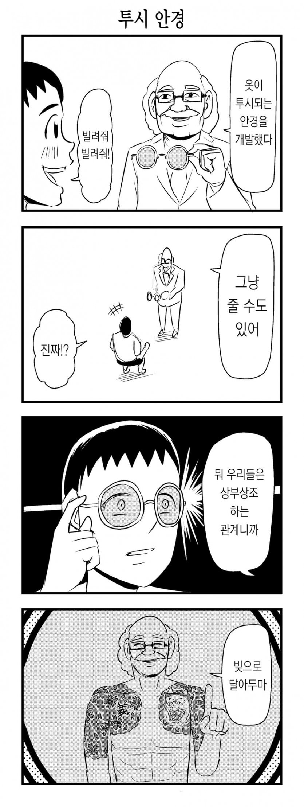

보기만 해도 옷 아래가 보이는 투시안경<-이새끼보다 뭔 시험이건 자동으로 스캔해서 답 딸깍해주는 안경이 더 먼저 나옴

보기만 해도 옷 아래가 보이는 투시안경<-이새끼보다 뭔 시험이건 자동으로 스캔해서 답 딸깍해주는 안경이 더 먼저 나옴
투시 안경은 불가능하겠지만 AR로 투시 비슷하게 보여줄 수는 있을듯
실시간으로 ai 이미지 합성해주는 거라면 이론상가능하긴 하겠다
딥페이크 쌉가능일거 같음
빚이면 그냥 주는게 아니잖아요 이레즈미 노인네야
투시는 안되도 투시처럼 보이는 안경은 지금도 가능함
주는거아이잖아..
물리법칙을 위배할순 없잖아
되겠냐고
빚으로 달아둔다니 저런 문신한 일본인한테 들으면 안되는 말 중에 하나를 들었네
나체안경 어딘가에는 있을듯
ㄹㅇ..
비열한 이과놈들 지들만 좋은거 보고 있다고!
저런 안경은 필요없고 최면어플 주라고
사실 옛날소니의 어떤캠코더는 약간의 개조만 거치면 얇은옷은 뚫을수있었음
근데 자외선이 존나 쌔야된다던데
나이트샷 기능으로 자외선보기 + 강한자외선이라 흰옷까지는 뚫었다고하더라
실시간으로 ai가 합성해주면 투시와 똑같은게 아닐까
ai로 나체 시뮬해서 빨통 존나 크고 예쁘게만 보정해주면 좋을듯.
빚의 무게ㄷㄷ
투시안경말고 그냥 보이는 모든 사람이 이쁘고 잘생기게 만드는 안경 해서 모두에게 보급
시험 감독관도 이제 안경부터 검사해야 하나
투시안경 이미 있지.
대신에 문제점이 두 개가 있는데,
1. 엑스레이를 발사해야 해서 보통 사이즈가 방 정도 됨.
2. 보통 뼈랑 내장 정도가 보이긴 함.
Ai안경으로 투시된 사진 만들어줘 딸깍 하고 안경에 비추게 하면 됨
ai보고 그냥 나체모드 켜달라고 하면 되는거 아녀?
예전에 투시렌즈랍시고 나왔긴 했음. 얇은 옷 입고있으면 음영같은거 잡아서 투시같은 효과 내는거.
세상이 잘못 돌아가고 있네 ㅠㅠ